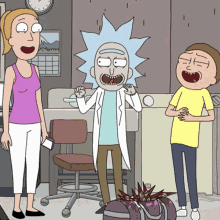
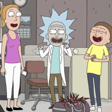
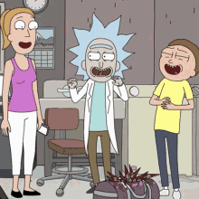

Numa paisagem midiática repleta de entretenimento, "Rick and Morty" emerge como um farol de advertência, iluminando o terreno traiçoeiro da ciência desenfreada e suas consequências imprevisíveis. Criada por Justin Roiland e Dan Harmon, esta série de animação desafia os limites da exploração científica e nos confronta com um espelho angustiante que reflete nossos próprios anseios tecnológicos.
No âmago da série estão as aventuras do cientista brilhante, porém profundamente perturbado, Rick Sanchez, e seu neto Morty. Viajando por dimensões alternativas e enfrentando desafios intergalácticos, a série evoca questionamentos profundos sobre os dilemas morais que emergem quando a ciência ultrapassa os limites éticos.
Ao confrontar os inúmeros universos paralelos e criar invenções perturbadoras, Rick desafia as fronteiras do conhecimento, muitas vezes à custa da moralidade. Suas ações frequentemente lançam uma luz sombria sobre a busca pelo progresso, levantando questões alarmantes sobre a responsabilidade que vem com o conhecimento.

No cerne desta trama animada reside uma advertência inquietante: até que ponto a exploração científica pode se distanciar da ética, e quais são as consequências catastróficas que podem surgir quando essa linha é cruzada? Em um momento de avanços tecnológicos sem precedentes, "Rick and Morty" ressoa como um sinal de alerta, desafiando a sociedade a considerar os riscos de uma busca desenfreada por conhecimento sem considerar as implicações morais.
Dessa forma, "Rick and Morty" se transforma em mais do que uma série de animação; ela é uma chamada para a reflexão sobre o equilíbrio delicado entre avanço científico e responsabilidade moral. Em um mundo onde a busca por descobertas é incessante, a série nos convoca a considerar as consequências éticas e a questionar os limites que devem ser estabelecidos para evitar que nossa ânsia por conhecimento nos conduza a um território perigoso e desconhecido.
“WUBBA LUBBA DUB DUB."